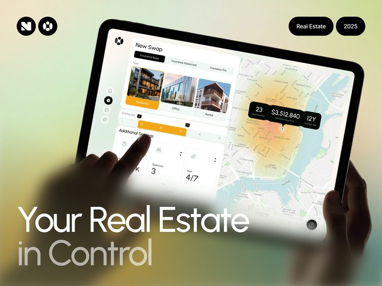

Real Estate App & Dashboard Design
by Nixtio
dashboard · 移动AppDashboard · Mobile App
平板上“New Swap”房产估值界面，左侧 Residential、Office、Rental 三类房源配 Building Age 滑杆与 3 卧、4/7 层，右侧曼哈顿地图标着 23 号房 $3,512,840 估价与 12Y 平均房龄；房产 App 用“一张地图 + 一个估价 + 一组筛选”把买房决策压进一屏。Real Estate App & Dashboard Design shows a “New Swap” valuation screen on a tablet: Residential, Office and Rental listings with a building-age slider, 3 bedrooms and floor 4/7 on the left, a Manhattan map on the right marking house 23 at $3,512,840 with a 12Y average age; one map, one estimate and one set of filters compress the whole home-buying decision into a single screen.